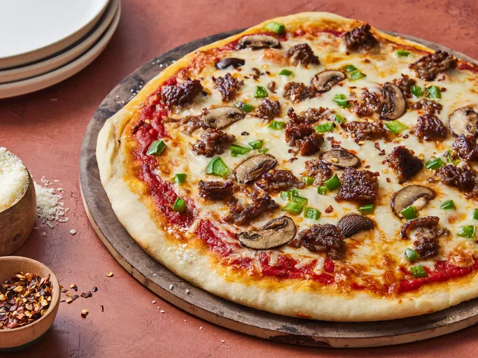

Pizza recepie

Description
This thin-crust pizza dough recipe is ready to bake in just 15 minutes with deliciously crisp results.
Ingredients
- Yeast: This thin crust pizza dough starts with one teaspoon of active dry yeast.
- Sugar and water: Activate the yeast in white sugar and lukewarm water.
- Flour: This crispy thin crust calls for all-purpose flour instead of bread flour.
- Salt: Salt tightens the gluten structure, which strengthens the dough and makes it more elastic.
How to Make Thin Crust Pizza Dough
You’ll find the full, step-by-step recipe below — but here’s a brief overview of what you can expect when you make homemade thin crust pizza dough:
- Activate the yeast with sugar and water.
- Make the dough.
- Knead the dough
- Roll the dough into a circle.